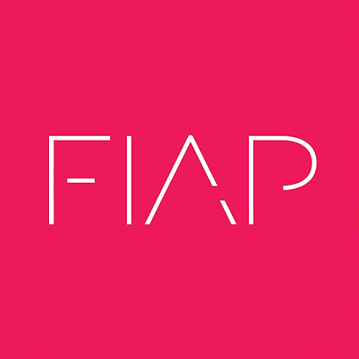
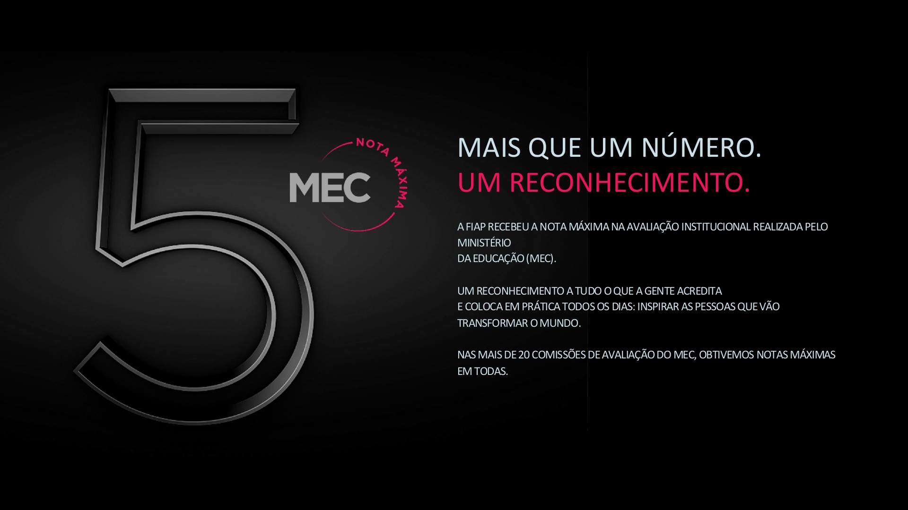
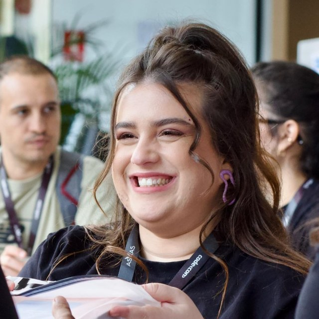

A comunidade local do Google Developer Groups: gente que curte tecnologia se encontrando pra aprender, ensinar e trocar.
MeetupsTalksComunidadeNetworking
Entra pra comunidade
GDGIRLS TALKS DE FIM DE ANO
GDG PORTO ALEGRE
GDGirls ✨💗
O espaço das girls dentro do GDG Porto Alegre
Queremos movimentar muito mais em 2027. Vamos juntas? 💗
Entra no grupo ✨
GDGIRLS TALKS DE FIM DE ANO
GDG PORTO ALEGRE
Nossa casa hoje
Sede: FIAP
Obrigada por abrir as portas pra gente aqui no Instituto Caldeira.
ANFITRIÃ
Marina Alano
Community Manager, FIAP

GDGIRLS TALKS DE FIM DE ANO
GDG PORTO ALEGRE

Patrocínio Gold
Obrigada, Growdev 💗
GDGIRLS TALKS DE FIM DE ANO
GDG PORTO ALEGRE
Patrocínio
Obrigada, Jaschek Gastronomia 💗
GDGIRLS TALKS DE FIM DE ANO
GDG PORTO ALEGRE
O combinado de hoje
Aqui não tem fórmula pronta. Nem cobrança.
Esse é um encontro pra celebrar o que deu certo, falar dos desafios sem filtro e começar a pensar em 2027 com calma.
Celebrar conquistasFalar de desafiosPlanejar 2027
GDGIRLS TALKS DE FIM DE ANO
GDG PORTO ALEGRE
A nossa tarde
Programação
14h15
Abertura + dinâmica: como está a sua roda da vida hoje?
Fernanda dos Santos · GDG POA
14h50
Pertencer, provar, cuidar: saúde mental de mulheres na tecnologia (e maternidade)
Jaqueline Michaelsen · Growdev
15h20
Break
15h30
Carreira aumentada: IA e competências humanas para se destacar em 2027
Tracy Freitas · FIAP
16h10
Checklist 2027: o que quem contrata quer ver (e por que você deve ser você)
Vitória Santos · Growdev
16h40
Encerramento e sorteios
GDGIRLS TALKS DE FIM DE ANO
GDG PORTO ALEGRE

Oi, eu sou a Fernanda
Feliz, alegre e forte. Mulher atípica. Curiosa. Enérgica. Gaúcha. Filha da Sandra. Parceira do Gui. Dinda da Liz. E mil coisas mais.
Product Owner
Gestão ágil, orquestração do time técnico
Formada em marketing
Com ênfase em comunicação
Coordenadora de Comunidade
GDG Porto Alegre
Estudante de ADS
Vibe Coding, btw
3 cachorros, 4 gatos
Uma casa grande que não dou conta kkk
GDGIRLS TALKS DE FIM DE ANO
@MASBAHGURIATECH
Antes de planejar 2027
Como está a sua roda da vida hoje?
Não dá pra traçar rota sem saber onde a gente está agora. Então, antes de planejar, vamos olhar pra dentro.
GDGIRLS TALKS DE FIM DE ANO
GDG PORTO ALEGRE
O que é
Um retrato da sua vida em 12 fatias
A roda da vida é uma ferramenta de autoavaliação: um círculo dividido em áreas, e você dá uma nota de 0 a 10 pra cada uma.
O desenho que aparece mostra, de um jeito bem visual, onde a vida está cheia e onde está pedindo cuidado.
Ela costuma ser atribuída a Paul J. Meyer e é muito usada em coaching e desenvolvimento pessoal.
GDGIRLS TALKS DE FIM DE ANO
GDG PORTO ALEGRE
As 12 áreas
Quatro grandes partes da vida
Pessoal
Saúde e disposição Desenvolvimento intelectual Equilíbrio emocional
Profissional
Carreira e realização Finanças Contribuição social
Relacionamentos
Família Amor Vida social
Qualidade de vida
Lazer e diversão Plenitude e felicidade Espiritualidade
Amor inclui o amor-próprio. Espiritualidade é o que te dá sentido, com ou sem religião. Se alguma área não faz sentido pra você, pode trocar por outra.
GDGIRLS TALKS DE FIM DE ANO
GDG PORTO ALEGRE
Como fazer
Quatro passos, poucos minutos
1
Dê a nota
De 0 a 10, como cada área está hoje. Não como deveria estar.
2
Pinte
Do centro até a nota, em cada fatia. Vale a primeira nota que vier.
3
Olhe o formato
Se fosse uma roda de bicicleta, ela rodaria? Onde trepida?
4
Escolha uma
Uma área pra cuidar primeiro. Só uma.
O 10 não é a meta. A meta é enxergar.
GDGIRLS TALKS DE FIM DE ANO
GDG PORTO ALEGRE
Dinâmica · pra fazer em casa
A folha é sua ✨
Leva pra casa e faz com calma. Você merece esse tempo.
Monte um momento só seu
1
Peça aquele iFood que você gosta
2
Luz baixa e uma música ambiente
3
Celular no silencioso
4
Preste atenção em você e dê as notas sem pressa
Prefere no celular? O QR code no pé da folha abre a versão digital.
Olhando pra sua roda
Quatro perguntas pra fazer pra ela
1
Qual nota te surpreendeu?
2
Qual área, se subisse dois pontos, puxaria as outras junto?
3
O que está bom e você não quer perder em 2027?
4
Essa nota é sua ou é a régua dos outros?
GDGIRLS TALKS DE FIM DE ANO
GDG PORTO ALEGRE
Dicas práticas
Como ajustar a roda sem se cobrar demais
Uma área por vez
Mexer em tudo ao mesmo tempo é o jeito mais rápido de não mexer em nada.
Mire no +2, não no 10
Sair do 4 pro 6 já muda a sua semana. E é uma meta que cabe na vida real.
Ação pequena e com data
"Cuidar da saúde" não é ação. "Caminhar 20 min na terça e na quinta" é.
Procure a alavanca
Às vezes uma área destrava várias: sono, rede de apoio, um limite no trabalho.
Refaça em junho
No meio do ano, faça de novo e compare com a roda de hoje.
É foto, não sentença
A roda mostra um momento. Ela muda, e você também.
GDGIRLS TALKS DE FIM DE ANO
GDG PORTO ALEGRE
Pacto entre mulheres 💗
Falar em voz alta gera compromisso. E, quando a gente fala, a gente também se escuta.
Olha pra girl do seu lado e diz em voz alta:
“Eu me comprometo comigo mesma.” ✨
Leve pra casa
A sua roda continua com você
Guarda a folha e marca na agenda: refazer em junho.
O QR code abre a Minha roda da vida, a versão digital da folha: você dá as notas no celular, salva e, em junho, refaz e compara com a roda de hoje.
Abre no navegador, sem instalar nadaAs notas ficam só no seu celular
minha-roda-da-vida.vercel.app
GDGIRLS TALKS DE FIM DE ANO
GDG PORTO ALEGRE
💋
😘
💖
Siga me acompanhando 💖
Obrigada, girls! ✨
Me chama pra continuar essa conversa e me conta qual área você escolheu cuidar em 2027 💋